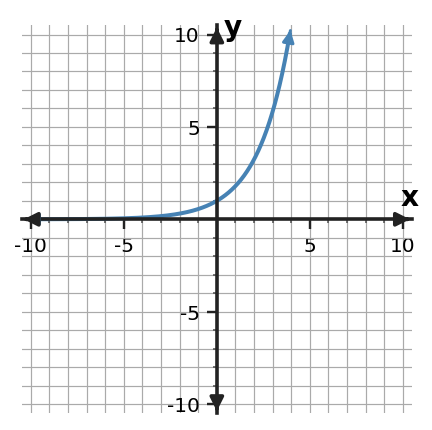

Algebra Extra Practice 7.1
1. An exponential relationship uses a multiplier of $\frac{21}{20}$ for each increase of 1 in $x$. Describe the percent change and tell whether it is growth or decay.
2. Consider $y=12(\frac{5}{3})^x$. Decide whether the relationship represents exponential growth or decay. Identify the initial value and the growth or decay factor.
3. Use the graph to decide whether the relationship shows exponential growth or decay. Give one graph feature that supports your decision.

4. Determine whether the table represents an exponential relationship. Support your conclusion with the pattern in the outputs.
| x | y |
|---|---|
| 0 | 2 |
| 1 | 5 |
| 2 | 10 |
| 3 | 17 |
| 4 | 26 |
5. The machine value increases by 32% each year. Use the repeated-percent behavior to justify an exponential model and identify the per-year multiplier.
6. The equation is $y=18(\frac{2}{3})^x$. Use the table to determine whether it represents the same relationship. Give evidence from at least two rows.
| x | y |
|---|---|
| 0 | $\displaystyle 18$ |
| 1 | $\displaystyle 12$ |
| 2 | $\displaystyle 8$ |
| 3 | $\frac{16}{3}$ |
7. The table follows an exponential pattern. Find the missing output and state the constant ratio.
| x | y |
|---|---|
| 0 | $\displaystyle 3$ |
| 1 | $\displaystyle 6$ |
| 2 | ? |
| 3 | $\displaystyle 24$ |
| 4 | $\displaystyle 48$ |
8. Use the table to decide whether the relationship is exponential growth or exponential decay. State the constant ratio that supports your decision.
| x | y |
|---|---|
| 0 | $\displaystyle 2$ |
| 1 | $\displaystyle \frac{5}{2}$ |
| 2 | $\displaystyle \frac{25}{8}$ |
| 3 | $\displaystyle \frac{125}{32}$ |
| 4 | $\displaystyle \frac{625}{128}$ |
9. The sequence is $\displaystyle 4$, $\displaystyle 3$, $\displaystyle \frac{9}{4}$, $\displaystyle \frac{27}{16}$, $\ldots$ . Find the next two terms and explain whether the pattern shows exponential growth or decay.
10. A quantity decreases by 22% each period. Write the multiplicative factor used from one period to the next.
11. An exponential relationship uses a multiplier of $\frac{6}{5}$ for each increase of 1 in $x$. Describe the percent change and tell whether it is growth or decay.
12. Consider $y=3(\frac{4}{5})^x$. Decide whether the relationship represents exponential growth or decay. Identify the initial value and the growth or decay factor.
13. Use the graph to decide whether the relationship shows exponential growth or decay. Give one graph feature that supports your decision.

14. Determine whether the table represents an exponential relationship. Support your conclusion with the pattern in the outputs.
| x | y |
|---|---|
| 0 | 81 |
| 1 | 27 |
| 2 | 9 |
| 3 | 3 |
| 4 | 1 |
15. The medicine amount decreases by 40% each hour. Use the repeated-percent behavior to justify an exponential model and identify the per-hour multiplier.
16. The equation is $y=8(\frac{2}{3})^x$. Use the table to determine whether it represents the same relationship. Give evidence from at least two rows.
| x | y |
|---|---|
| 0 | $\displaystyle 8$ |
| 1 | $\displaystyle \frac{16}{3}$ |
| 2 | $\displaystyle \frac{32}{9}$ |
| 3 | $\displaystyle \frac{64}{27}$ |
17. The table follows an exponential pattern. Find the missing output and state the constant ratio.
| x | y |
|---|---|
| 0 | $\displaystyle 48$ |
| 1 | $\displaystyle 24$ |
| 2 | ? |
| 3 | $\displaystyle 6$ |
| 4 | $\displaystyle 3$ |
18. Use the table to decide whether the relationship is exponential growth or exponential decay. State the constant ratio that supports your decision.
| x | y |
|---|---|
| 0 | $\displaystyle 5$ |
| 1 | $\displaystyle \frac{10}{3}$ |
| 2 | $\displaystyle \frac{20}{9}$ |
| 3 | $\displaystyle \frac{40}{27}$ |
| 4 | $\displaystyle \frac{80}{81}$ |
19. Solve $\displaystyle 3x^2-2x-1=0$ using the quadratic formula. Give exact solutions.
20. For $\displaystyle x^2+2x+5=0$, compute the discriminant and use it to state how many real solutions the equation has.
21. A height model leads to the equation $\displaystyle 3 t^{2} - 18 t - 4=0$ for possible times when an object is at ground level, where $t$ is measured in seconds and $t\ge 0$. Use the quadratic formula and interpret the meaningful solution.
22. Factor $\displaystyle 9x^2-9$ completely.
23. Factor $x^2-12x+36$ completely.
24. Identify the special factoring pattern in $x^2-49$ and factor the expression.